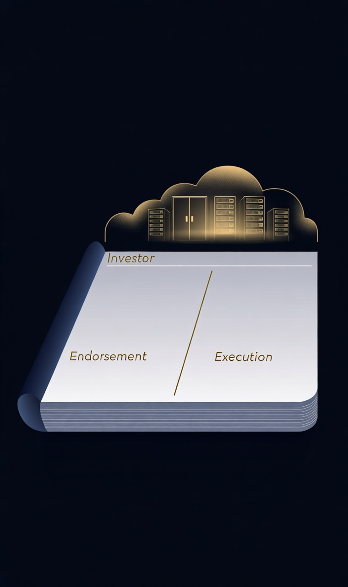
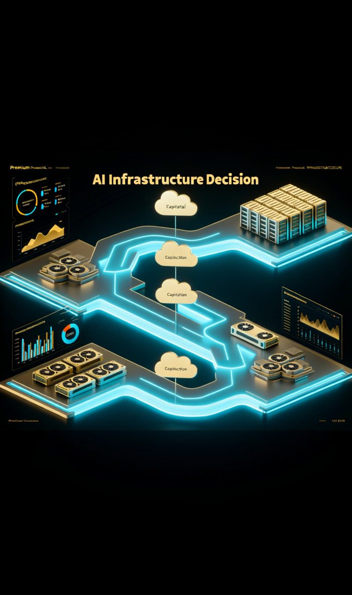

META持有偏买
阶段评级优先研究的新钱入口
下一动作回撤分批看
关键验证AI 投入回报 / 广告底盘
“真正决定高弹性仓位能不能拿住的，不是新闻有多大，而是交付、客户和现金流有没有跟上。”
今天看 NBIS，不是为了追热度，而是为了判断这轮“强背书”能不能变成真实兑现
NBIS 现在最合适的定义，不是“无脑追的 AI 热门股”，而是高弹性、但必须接受兑现审查的成长平台。如果你愿意承受波动，它值得继续放在组合里跟踪；但新增风险预算不该因为背书更强就自动抬高。更成熟的动作是：继续持有、严格盯兑现、不在最热的时候把它误升成核心仓。
你当前已经持有 NBIS，账本记录为 4 股，成本 93.60。按 2026-03-13 收盘价计算，当前大致是 浮盈约 +20.67%。这意味着今天真正要做的，不是重新证明它是不是好故事，而是判断：在已有盈利状态下，是不是还该继续追高。
强背书很重要，但它只能帮你穿越第一段路，不能替你完成兑现
成长股最迷人的地方，是它总会在某个阶段出现一连串越来越大的信号：行业风来了、头部公司合作了、巨头投资了、管理层目标更激进了。很多人一看到这些信号，就会自动把它们翻译成“后面财报一定更好、估值一定还能更高”。问题在于，资本市场最容易制造赚钱幻觉的，恰恰就是这种从强背书直接跳到强兑现的心理捷径。
更稳的做法，是把判断拆成两张表：第一张表叫背书表，看谁在支持、合作、扩产、给资源；第二张表叫兑现表，看收入确认、客户质量、毛利结构、资本效率、现金流有没有跟上。高成长资产真正的复利，不来自新闻稿本身，而来自它能不能把新闻稿里的远景，慢慢写进报表里。

背书决定市场愿不愿意先给你估值，兑现决定市场愿不愿意让你把估值留住
很多人不是亏钱时乱，而是赚钱时乱。盈利会让人误以为自己更懂这只股票，进而把原本应当更谨慎的高弹性仓位，升级成不断加码的信仰仓。真正成熟的动作，是在赚钱时更重视验证和节奏，而不是更轻视它们。
把公开线索、账本状态、证据硬度和组合动作放到同一页，不让第三部分退化成新闻摘要

第三部分真正该回答的，不是“今天谁新闻更热”，而是“这些公开线索会不会改变组合的下一步动作”
第四部分不发散，只保留今天真正会改变仓位动作的锚点